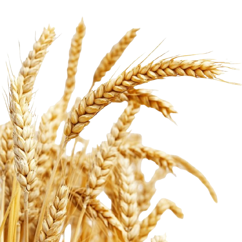
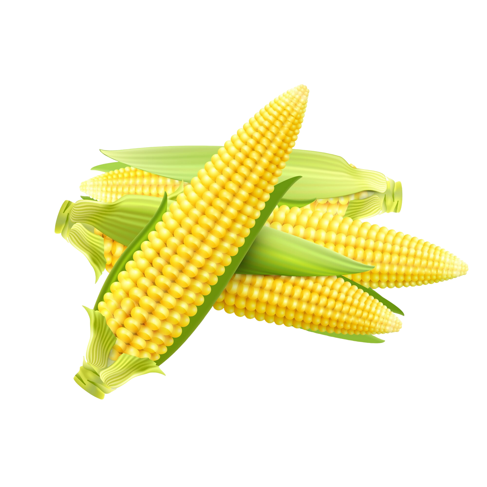
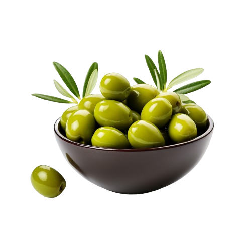
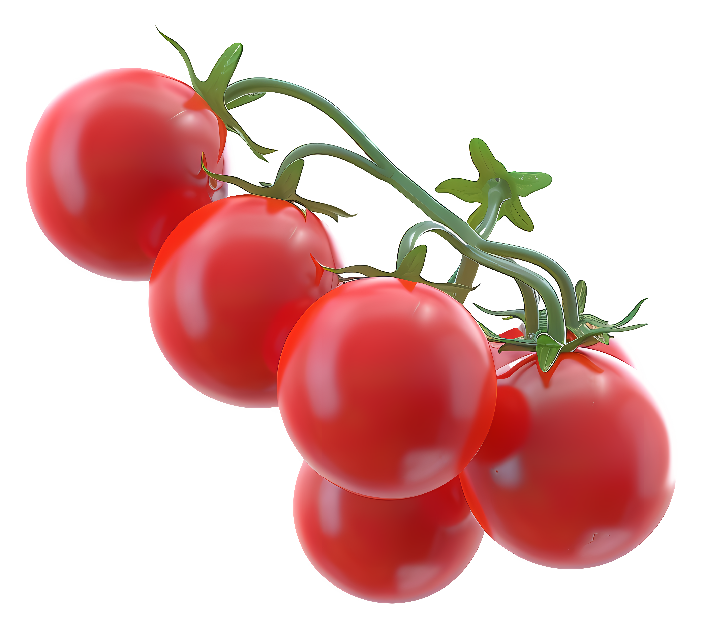
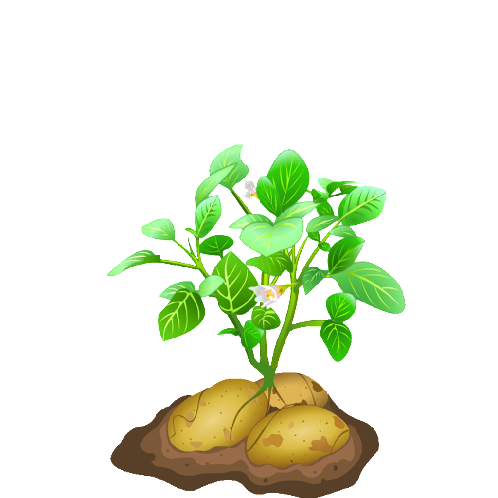
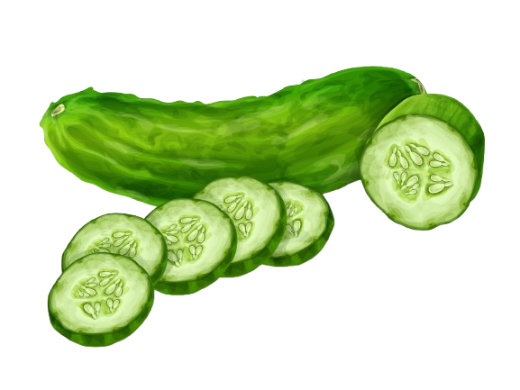
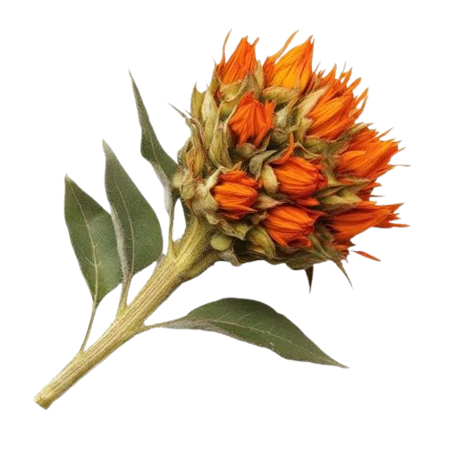
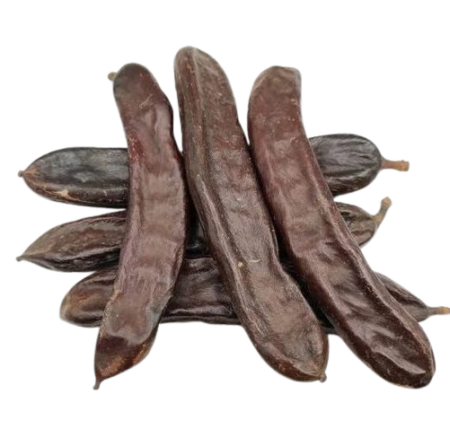

Wheat
One of the main staple grains in Jordan, used for bread and baked goods.

One of the main staple grains in Jordan, used for bread and baked goods.

A widely cultivated crop used for food, animal feed, and industrial products.

Evergreen tree; olive and oil production is a major source of agricultural income.

ECommon vegetable crop, grown in greenhouses and open fields.

Common vegetable widely used in cooking, grown in various colors and types.

Staple food crop, grown in most agricultural regions.

Common summer vegetable, eaten fresh in salads and dishes.

Rare aromatic medicinal herb, used in food and medicinal purposes.

Rare vegetable grown in specific areas, used in traditional medicine.

Rare herb cultivated for medicinal and spiritual purposes.

Rare crop used for natural oil extraction and some foods.

Rare herb used in medicinal drinks and for treating certain ailments.

A widely cultivated crop used for food, animal feed, and industrial products.